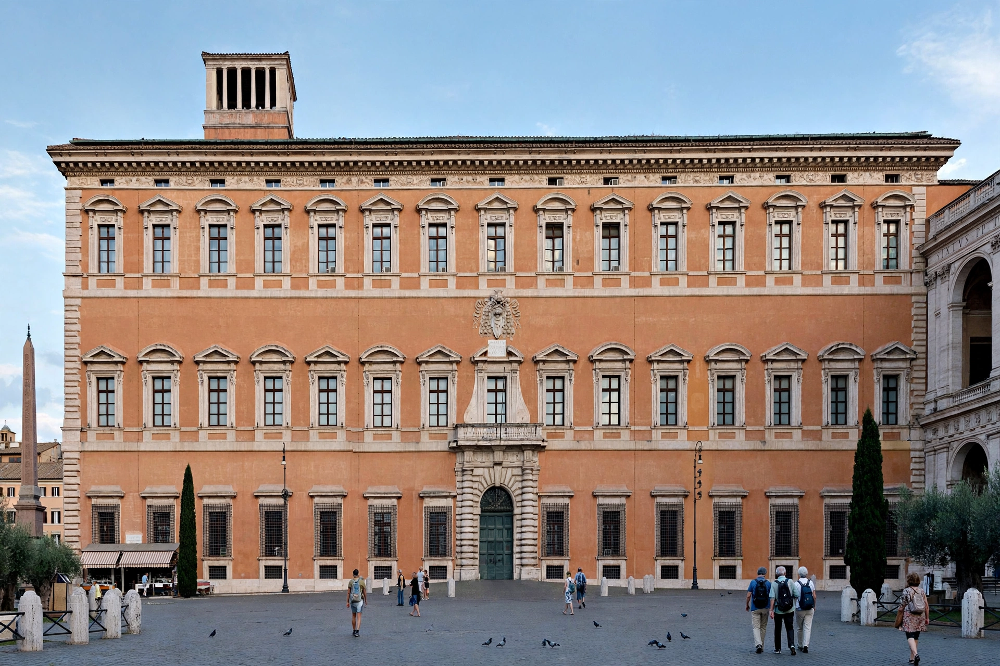

Lateran Treaty
| Lateran Treaty | |
|---|---|
 The Lateran Palace, Rome | |
| Signed | 11 February 1929 |
| Location | Lateran Palace, Rome, Italy |
| Parties | Holy See; Kingdom of Italy |
| Signatories | Cardinal Pietro Gasparri (for Pope Pius XI); Benito Mussolini (for King Victor Emmanuel III) |
| Effect | Created Vatican City State; settled the Roman Question |
The Lateran Treaty (Italian: Patti Lateranensi) was one component of the Lateran Pacts of 1929, agreements between the Kingdom of Italy under Benito Mussolini and the Holy See under Pope Pius XI to settle the long-standing Roman Question. Signed on 11 February 1929 at the Lateran Palace in Rome, the treaty recognised Vatican City as an independent sovereign state under the authority of the Holy See.
Background
During the unification of Italy, Italian forces seized Rome in 1870 and annexed the Papal States, ending the pope's temporal rule over central Italy. The popes refused to accept the loss, regarding themselves as "prisoners in the Vatican" and declining to leave the Vatican or recognise the Italian state. Italy's unilateral Law of Guarantees (1871) was rejected by the papacy, and the standoff — the Roman Question — lasted nearly sixty years.
Terms
The Lateran Pacts consisted of three documents. The treaty proper established Vatican City State, a territory of 44 hectares (about 109 acres), as a neutral and inviolable sovereign state; Italy recognised the Holy See's full ownership and jurisdiction over it, and the Holy See in return recognised Rome as the capital of Italy. A financial convention compensated the Holy See for the loss of the Papal States with a payment of 750 million lire plus Italian state bonds. A concordat regulated church–state relations in Italy, recognising Roman Catholicism as the state religion, granting civil effects to canonical marriage, and providing for religious instruction in state schools.
Aftermath
The treaty was incorporated into the Italian Constitution of 1948, securing its survival after the fall of fascism and the monarchy. A revised concordat in 1984, signed by Prime Minister Bettino Craxi, ended Catholicism's status as Italy's state religion while preserving much of the framework. The Lateran Treaty created the world's smallest state and remains the juridical foundation of Vatican City's independence.